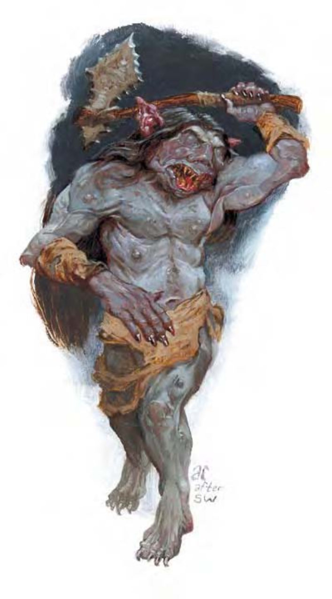

| 资料栏位 | 石盲蛮族 (Grimlock) 中型人形怪物 |
| 生命骰 | 2d8+2 (11HP) |
| 先攻 | +1 |
| 速度 | 30英尺 (6格) |
| 防御等级 | 15 (+1敏捷、+4天生)、接触11、措手不及14 |
| 基本攻击/擒抱 | +2 / +4 |
| 攻击 | 战斧+4近战 (1d8+3 / ×3) |
| 全力攻击 | 战斧+4近战 (1d8+3 / ×3) |
| 占据/触及 | 5英尺 / 5英尺 |
| 特殊攻击 | ― |
| 特殊能力 | 盲感40英尺、免疫、灵敏嗅觉 |
| 豁免 | 强韧+1、反射+4、意志+2 |
| 属性 | 力量15、敏捷13、体质13、智力10、感知8、魅力6 |
| 技能 | 攀爬+4、躲藏+3*、聆听+5、侦察+3 |
| 专长 | 警觉、追踪 B |
| 环境 | 地底 |
| 组织 | 成队 (2-4)、一批 (10-20)、一族 (10-60，加上每10个成年石盲蛮族1个3-5级干部)、教团 (10-80，加上每10个成年石盲蛮族1个3-5级干部，加上1个夺心魔或梅杜莎) |
| 挑战级数 | 1 |
| 宝藏 | 标准钱币、标准宝物 (只有宝石)、标准物品 |
| 阵营 | 通常中立邪恶 |
| 进化 | 视人物职业而定 |
| 等级修正值 | +2 |
这个肌肉结实的人形生物身高与正常人类相同。他的皮肤很厚，呈灰色且有鳞片，眼眶里没有眼球。
石盲蛮族是栖息于地底深处的种族，但会为了劫掠奴隶或财物而来到地表。他们会埋伏在可提供隐蔽的山区。石盲蛮族偏好新鲜生肉，尤其是人肉。
由于对外人的极端仇视畏惧，在地表遭遇到的石盲蛮族都是成队结队行动，在地底他们会形成族群，由强大的石盲蛮族或其他智能生物领导，如夺心魔或梅杜莎。
石盲蛮族通晓石盲蛮族语与通用语。
战斗石盲蛮族天生目盲，但敏锐的嗅觉与听觉使他们能注意到附近的敌人。因此石盲蛮族通常不用远程武器，而是直接冲上前去挥舞他们的石制战斧。
盲感 (特异)：石盲蛮族可以感觉到距离他们40英尺以内的敌人，效果与有正常视觉的生物相同。超过这个距离的生物则为完全隐蔽。
石盲蛮族对声音或气味类的攻击特别敏感，也会受极大噪音、音波法术（如“幻音术”或“沉默术”）及强烈气味（“臭云术”或乌烟瘴气的空气）的影响。减损石盲蛮族的听觉或嗅觉将减弱其盲战的能力（专长），若二感同时消失，石盲蛮族即视为目盲。
免疫 (特异)：石盲蛮族对凝视攻击、视觉效果、幻术或其他仰赖视觉的攻击免疫。
技能*：石盲蛮族的灰色皮肤能帮助他们躲藏在其原生环境中。在山区或地底时进行“躲藏”检定时具有+10种族加值。
独立的石盲蛮族集团通常由野蛮人带领，而由夺心魔带领的石盲蛮族多为巡林客。
石盲蛮族人物具有下列种族特性：
― +4力量、+2敏捷、+2体质、-2感知、-4魅力。
― 中型。
― 石盲蛮族的基本行走速度为30英尺。
― 黑暗视觉可达60英尺。
― 种族生命骰：石盲蛮族起始为2级人形怪物，生命骰2d8、基本攻击加值+2，强韧、反射与意志的基本豁免检定则分别是+0、+3及+3。
― 种族技能：石盲蛮族的人形怪物等级使他的技能点数为5x (2+智力调整值，最低1)。本职技能为攀爬、躲藏、聆听与侦察。石盲蛮族在山区或地底进行“躲藏”检定时具有+10种族加值。
― 种族专长：石盲蛮族的人形怪物等级具有一个专长。
― 武器擅长：石盲蛮族天生擅长战斧。
― +4天生防御加值。
― 特殊能力 (见前文)：盲感40英尺、免疫、灵敏嗅觉。
― 母语：通用语、石盲蛮族语。额外语言：龙语、矮人语、侏儒语、土族语、地底通用语。
― 适合职业：野蛮人。
― 等级修正值：+2